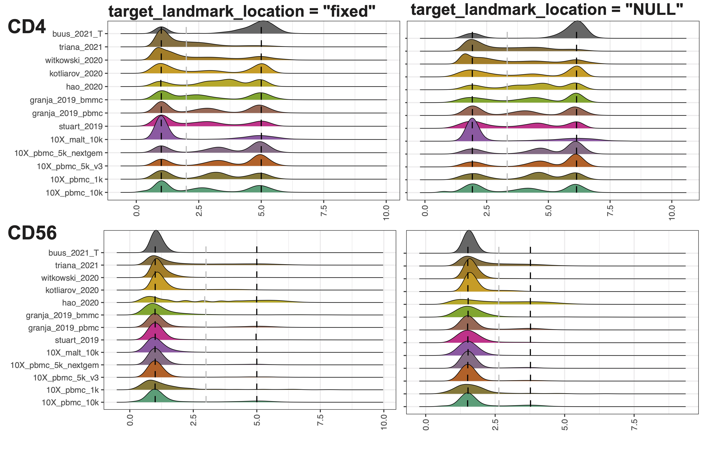
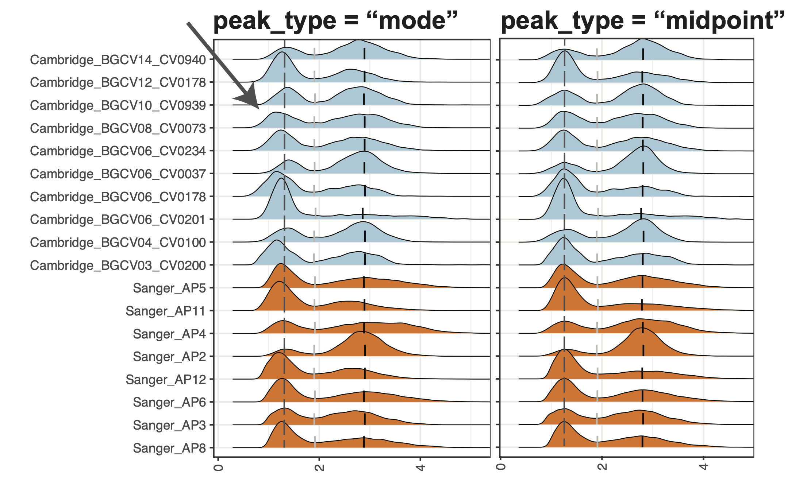
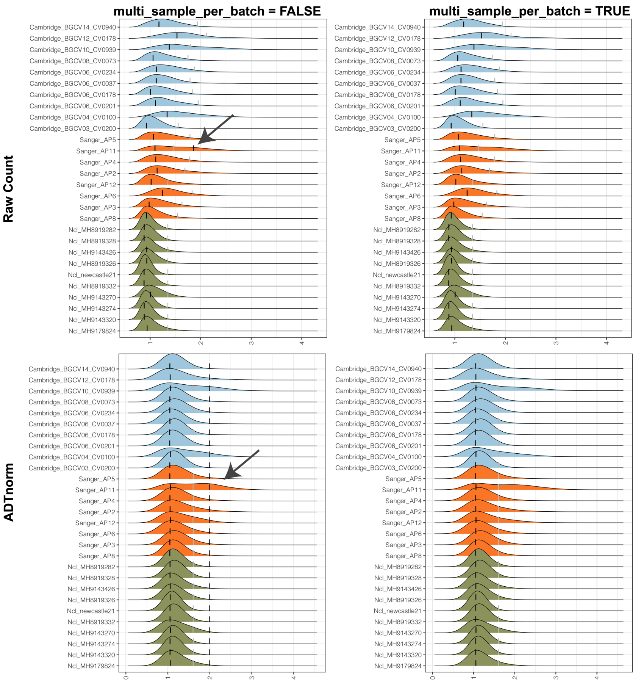
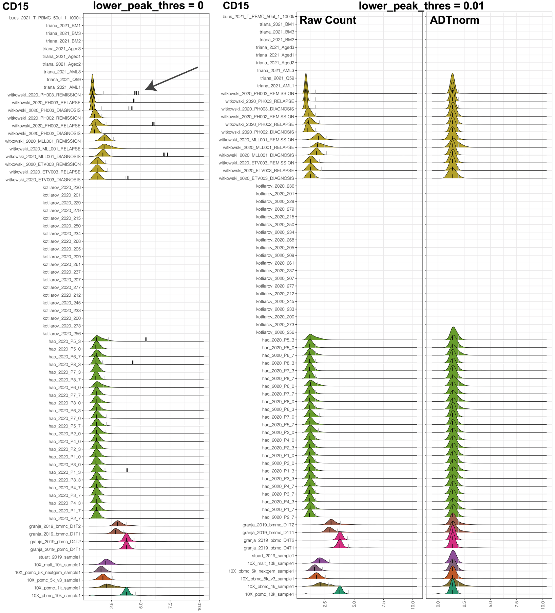
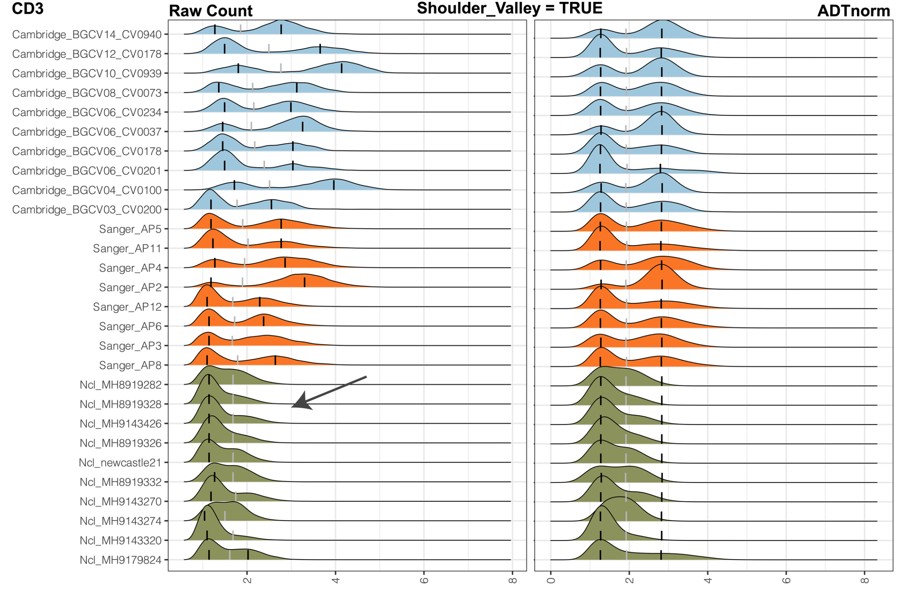
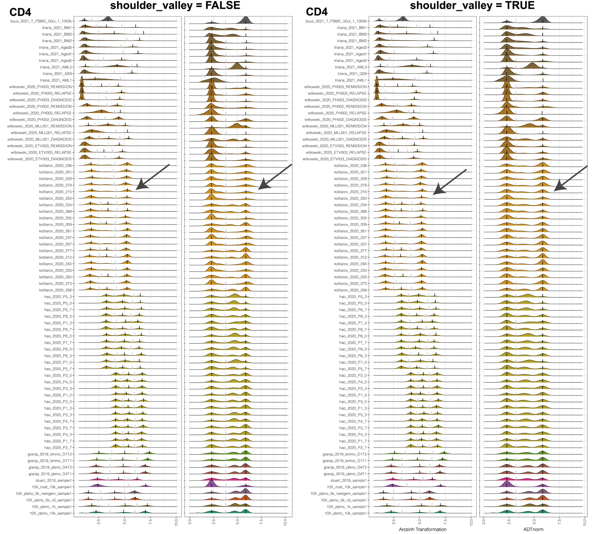

CITE-seq technology enables the direct measurement of protein expression, known as antibody-derived tags (ADT), in addition to RNA expression. The increase in the copy number of protein molecules leads to a more robust detection of protein features compared to RNA, providing a deep definition of cell types. However, due to added discrepancies of antibodies, such as the different types or concentrations of IgG antibodies, the batch effects of the ADT component of CITE-seq can dominate over biological variations, especially for the across-study integration. We present ADTnorm as a normalization and integration method designed explicitly for the ADT counts of CITE-seq data. Benchmarking with existing scaling and normalization methods, ADTnorm achieves a fast and accurate matching of the negative and positive peaks of the ADT counts across samples, efficiently removing technical variations across batches. Further quantitative evaluations confirm that ADTnorm achieves the best cell-type separation while maintaining the minimal batch effect. Therefore, ADTnorm facilitates the scalable ADT count integration of massive public CITE-seq datasets with distinguished experimental designs, which are essential for creating a corpus of well-annotated single-cell data with deep and standardized annotations.
# install.packages("remotes")
remotes::install_github("yezhengSTAT/ADTnorm", build_vignettes = FALSE)The 13 public datasets used in the manuscript is also included in the R package as demo data set. They can be loaded by
cell_x_adt contains a matrix of raw count for the cell by ADT markers, which is a data frame with 422682 cells (row) and 9 ADT markers (column): CD3, CD4, CD8, CD14, CD19, CD25, CD45RA, CD56, CD127. CD3 CD4 CD8 CD14 CD19 CD25 CD45RA CD56 CD127
1 18 138 13 491 3 9 110 17 7
2 30 119 19 472 3 5 125 248 8
3 18 207 10 1289 8 15 5268 26 12
4 18 11 17 20 5 15 4743 491 16
5 5 14 14 19 4 16 4108 458 17
6 21 1014 29 2428 7 52 227 29 15cell_x_feature is a data frame with 422682 cells (row) and 7 feature variables (column):
sample: Sample name used in original data of each study.
batch: Batch information provided from each study.
sample_status: Sample status, i.e., Healthy, MALTtumor, HIV Vaccine, Lupus, B-ALL, AML.
study_name: Name of the data set/study.
ADTseqDepth: Total UMI per cell.
cell_type_l1: Broad level of cell type annotation using manual gating.
cell_type_l2: Fine level of cell type annotation using manual gating.
sample batch sample_status study_name
1 10X_pbmc_10k_sample1 10X_pbmc_10k_batch1 healthy 10X_pbmc_10k
2 10X_pbmc_10k_sample1 10X_pbmc_10k_batch1 healthy 10X_pbmc_10k
3 10X_pbmc_10k_sample1 10X_pbmc_10k_batch1 healthy 10X_pbmc_10k
4 10X_pbmc_10k_sample1 10X_pbmc_10k_batch1 healthy 10X_pbmc_10k
5 10X_pbmc_10k_sample1 10X_pbmc_10k_batch1 healthy 10X_pbmc_10k
6 10X_pbmc_10k_sample1 10X_pbmc_10k_batch1 healthy 10X_pbmc_10k
ADTseqDepth cell_type_l1 cell_type_l2
1 981 monocytes classical monocyte
2 1475 monocytes classical monocyte
3 7149 monocytes classical monocyte
4 6831 NK CD16+ NK
5 6839 NK CD16+ NK
6 4720 monocytes classical monocyteFor a quick start of using ADTnorm, we will treate all the cells from one study as one sample and normalize across studies.
library(ADTnorm)
save_outpath <- "/path/to/output/location"
run_name <- "ADTnorm_demoRun"
data(cell_x_adt)
data(cell_x_feature)
cell_x_feature$sample = factor(cell_x_feature$study_name)
cell_x_feature$batch = factor(cell_x_feature$study_name)
cell_x_adt_norm = ADTnorm(
cell_x_adt = cell_x_adt,
cell_x_feature = cell_x_feature,
save_outpath = save_outpath,
study_name = run_name,
marker_to_process = NULL, ## setting it to NULL by default will process all available markers in cell_x_adt.
bimodal_marker = NULL, ## setting it to NULL will trigger ADTnorm to try different settings to find biomodal peaks for all the markers.
trimodal_marker = c("CD4", "CD45RA"), ## CD4 and CD45RA tend to have three peaks.
positive_peak = list(ADT = "CD3", sample = "buus_2021_T"), ## setting the CD3 uni-peak of buus_2021_T study to positive peak if only one peak is detected for CD3 marker.
brewer_palettes = "Dark2", ## colorbrewer palettes setting for the density plot
save_intermediate_fig = TRUE
)cell_x_adt: Matrix of ADT raw counts in cells (rows) by ADT markers (columns) format.
cell_x_feature: Matrix of cells (rows) by cell features (columns) such as cell type, sample, and batch-related information.
save_outpath: The path to save the results.
study_name: Name of this run.
marker_to_process: Markers to normalize. Leaving empty to process all the ADT markers in cell_x_adt matrix.
bimodal_marker: Specify ADT markers that are likely to have two peaks based on researchers' prior knowledge or preliminary observation of particular data to be processed. Leaving it as default, ADTnorm will try to find the bimodal peak in all markers that are not listed in `trimodal_marker.`
trimodal_marker: Index of the ADT markers that tend to have three peaks based on researchers' prior knowledge (e.g., CD4) or preliminary observation on particular data to be processed.
positive_peak: A list variable containing a vector of ADT marker(s) and a corresponding vector of sample name(s) in matching order to specify that the uni-peak detected should be aligned to positive peaks. For example, for samples that only contain T cells. The only CD3 peak should be aligned to the positive peaks of other samples.
save_intermediate_fig: Save the density plot figure for checking the peak and valley location detection.The full parameter explanation for the ADTnorm function can be found at Reference - ADTnorm. In next section, we will show the usage of the rest of parameters and go through some typical parameter tuning examples.
cell_x_adt_norm is the normalized ADT counts of the same dimension of cell_x_adt.
CD3 CD4 CD8 CD14 CD19 CD25 CD45RA CD56
1 1.969350 3.292308 1.637615 3.885946 1.296276 1.328292 2.728777 1.510205
2 2.285588 3.179321 1.890224 3.854359 1.296276 1.060717 2.825304 3.285286
3 1.969350 3.612930 1.482134 4.704417 1.713140 1.634128 5.858261 1.735593
4 1.969350 1.620001 1.812941 1.603789 1.484578 1.634128 5.753854 3.926593
5 1.321316 1.753275 1.684441 1.573910 1.394763 1.677503 5.615075 3.857970
6 2.062768 5.069278 2.206177 5.306176 1.642843 2.628830 3.278655 1.796711
CD127
1 1.335782
2 1.394575
3 1.594514
4 1.754638
5 1.790186
6 1.717475Additionally, in the save_outpath specified by the users, there will be two subfolders, figures (if setting save_intermediate_fig to TRUE``) and `RDS` (if settingsave_intermediate_rdstoTRUE``), containing the intermediate object and density plot of detected peak and valley landmarks before and after ADTnorm. Those figures can be used to check if further parameter tuning is needed for certain ADT markers.
ADTnorm provide a quick and naive ADT marker cleaning and unify function, clean_adt_name, which will be able to remove unwanted suffix such as "_TotalSeqB“,”_PROT" or prefix such as “ADT_”. Or, if there is no “CD8” marker detected, look for “CD8A” or “CD8a” to work as “CD8”. Users need to clean and unify the ADT marker names first before running ADTnorm (for example, “PDL1” may also be named as “CD274”. Choose one and use it consistently) and please do not rely too much on this function to clean ADT marker names across study. Users may also refer to AbName package to match antibody names to gene or protein identifiers, and to help standardise names across data sets.
For some cases, where CD3, CD4, and CD8 are named using other words, users can specify the column index in cell_x_adt so that ADTnorm can still recognize those three markers and customize parameters for identifying the peaks and valleys.
cd3_index: Index for CD3 marker. If the ADT marker is named “CD3”, the program can detect the index automatically. If users named CD3 in a unique way, please provide the index for CD3 markers in the colname of cell_x_adt.
cd4_index: Index for CD4 marker. If the ADT marker is named “CD4”, the program can detect the index automatically. If users named CD4 in a unique way, please provide the index for CD4 markers in the colname of cell_x_adt.
cd8_index: Index for CD8 marker. If the ADT marker is named “CD8”, the program can detect the index automatically. If users named CD8 in a unique way, please provide the index for CD8 markers in the colname of cell_x_adt.
target_landmark_location: Align the landmarks to a fixed location or, by default, align to the mean across samples for each landmark. The default value is NULL. Setting it to “fixed” will align the negative peak to 1 and the right-most positive peak to 5. Users can also assign a two-element vector indicating the location of the negative and most positive peaks to be aligned.
For example, in the “Quick start” example, setting target_landmark_location to be fixed will align the negative peak to 1 and the right-most positive peak to 5.
library(ADTnorm)
save_outpath <- "/path/to/output/location"
run_name <- "ADTnorm_demoRun_fixedAlignment"
data(cell_x_adt)
data(cell_x_feature)
cell_x_feature$sample = factor(cell_x_feature$study_name)
cell_x_feature$batch = factor(cell_x_feature$study_name)
cell_x_adt_norm = ADTnorm(
cell_x_adt = cell_x_adt,
cell_x_feature = cell_x_feature,
save_outpath = save_outpath,
study_name = run_name,
marker_to_process = NULL, ## setting it to NULL by default will process all available markers in cell_x_adt.
bimodal_marker = NULL, ## setting it to NULL will trigger ADTnorm to try different settings to find biomodal peaks for all the markers.
trimodal_marker = c("CD4"), ## CD4 and CD45RA tend to have three peaks.
positive_peak = list(ADT = "CD3", sample = "buus_2021_T"), ## setting the CD3 uni-peak of buus_2021_T study to positive peak if only one peak is detected for CD3 marker.
brewer_palettes = "Dark2", ## colorbrewer palettes setting for the density plot
save_intermediate_fig = TRUE,
target_landmark_location = "fixed"
)
Remarkably, setting to fixed locations can eliminate the value range discrepancies across ADT markers. Also, when additional new samples are added, users can only run ADTnorm on the new samples and align to the same target locations for negative peaks and positives.
landmark_align_type: Algin the peak and valleys using one of the “negPeak”, “negPeak_valley”, “negPeak_valley_posPeak”, and “valley” alignment modes.
By default, ADTnorm will align the negative peaks across samples, align first valleys across samples and algin the right-most positive peaks simultenously. However, ADTnorm do have options to only align negative peaks across samples (landmark_align_type = “negpeak”), or only align negative peaks and first valleys (landmark_align_type = “negPeak_valley”), or only align the first valleys across samples (landmark_align_type = “valley”). We strongly recommend using the default option, “negPeak_valley_posPeak”, unless you have strong reason to choose other option.
peak_type: The type of peak to be detected. Select from “midpoint” for setting the peak landmark to the midpoint of the peak region being detected or “mode” for setting the peak landmark to the mode location of the peak. “midpoint” can be generally more robust across samples and less impacted by the bandwidth. “mode” can be more accurate in determining the peak location if the bandwidth is generally ideal for the target marker.
Generally, we recommend using “midpoint”. However, if users observe that the negative peaks modes have obvious mis-alignment after ADTnorm (see below), users can consider using “mode” and see if a better peak alignment results can be obtained.

multi_sample_per_batch: Set it to TRUE to discard the positive peak that only appear in one sample per batch (sample number is >=3 per batch).
There are cases where there is only one sample that has a detected positive peak. Therefore, there is no need to align the only positive peak across samples and imputing the rest of positive peaks is not proper. Setting multi_sample_per_batch to TRUE will remove the only detected positive peak and only align the negative peak and valley.

lower_peak_thres: The minimal ADT marker density height of calling it a real peak. Set it to 0.01 to avoid a suspicious positive peak. Set it to 0.001 or smaller to include some small but tend to be real positive peaks, especially for markers like CD19.
Sometimes, the only positive peak can be artificial and has very week peak signal. Users can use this parameter to remove unwanted low signal positive peaks. The default minimal threshold to call a peak is 0.001. For example, for the COVID-19 data set used in the manuscript, to exclude the unwanted low signal peak of CD15, lower_peak_thres can be set to 0.01.

However, for markers such as CD19, we may expect to have a low signal positive peak. lower_peak_thres can be decreased to 0.001 or much smaller value to include those low signal peaks.
shoulder_valley: Indicator to specify whether a shoulder valley is expected in case of the heavy right tail where the population of cells should be considered as a positive population.
shoulder_valley_slope The slope on the ADT marker density distribution to call shoulder valley.
Due to technical variations, the positive population of cells may not have a very clear separation from the negative population. Instead of having a separable positive peak, those positive population may overlap largely with the negative ones, leading to a shoulder peak or heavy right tail pattern on the ADT count density distribution. shoulder_valley will allow users to turn on the detection of valley location around the “shoulder” location of the negative peak and shoulder_valley_slope will allow users to obtain a relatively more stringent shoulder valley or more relaxing shoulder valley. Setting shoulder_valley_slope to more negative value, such as -1, -2, ADTnorm will set the valley to more sharply decreasing lolcation (slope is more sharp) hence closer to the negative peak mode. Setting shoulder_valley_slope to less negative value, such as -0.5, -0.1, ADTnorm will set the valley towards the tail region of the negative peak. Users can set save_intermediate_fig to TRUE to see the ADT count density plot and the location of valleys and peaks. Those figures will help diagnoise.

shoulder_valley mode will especially useful when the valley locations vary dramatically. For example, in the following example, CD4 middle peak can be hard to detect for some samples. If we set the valley to be local minimal between negative peak and positive peak, it may vary dramatically. Some samples may have the valley before middle peak or after middle peak. Setting shoulder_valley to be TRUE with a less negative shoulder_valley_slope (such as -0.1) will guarantee that the valley is detected before middle peak.

valley_density_adjust: Parameter for density function: bandwidth used is adjust*bw. This makes it easy to specify values like ‘half the default bandwidth.
midpoint_type: Fill in the missing first valley by the midpoint of two positive peaks (“midpoint”) or impute by other valleys (“valley”).
neg_candidate_thres: The upper bound for the negative peak. Users can refer to their IgG samples to obtain the minimal upper bound of the IgG sample peak. It can be one of the values of asinh(4/5+1), asinh(6/5+1), or asinh(8/5+1) if the right 95% quantile of IgG samples is large.